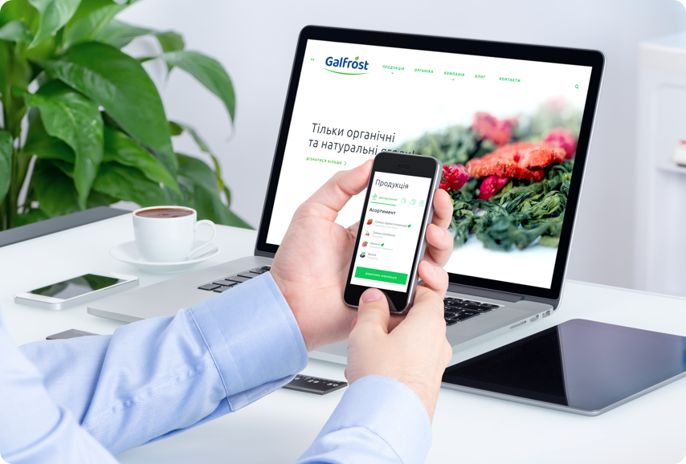

<div class="page" data-barba="container" data-barba-namespace="skils">
    <div class="skils">
        <section class="section color_white" id="skils">
            <div class="skils_before"></div>
            <div class="gobackbtn">
                <a class="link" href="/"><i class="icon-slider-arrow-left"></i> Go back</a>
            </div>
            <div class="skils__container">
                <div class="skils__description">
                    <h1 class="section__title">Web & Mobile App Development</h1>
                    <p>Вы основали свой startup и с нетерпением ждете, когда заявите о себе миру? Или уже давно владеете успешным бизнесом, но ему необходим глоток свежего воздуха в виде нового сайта? Вы обратились по адресу. Наши senior-разработчики занимаются:</p>
                    <ul>
                        <li>SAAS Development;</li>
                        <li>E-Commerce;</li>
                        <li>Game Development;</li>
                        <li>CRM Development;</li>
                        <li>Brand Presentation.</li>
                    </ul>
                    <div class="btn__container">
                        <a href="#" class="btn btn--pink">Let’s talk</a>
                    </div>
                </div>
                <div class="skils__thumbnail">
                    
                </div>
            </div>
        </section>
        {{> footer }}
    </div>
</div>